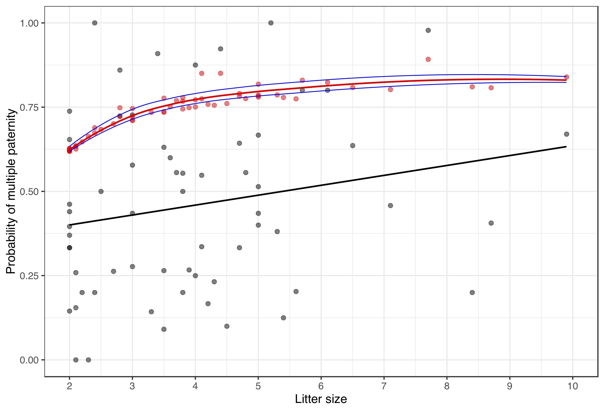

I have broad research interests that cover a wide-range of areas, including spatio-temporal statistics, robust estimation, forecasting, disease modeling, Bayesian estimation, and causal inference for ecological data. For the most part, they can be grouped into two main goals:
Developing statistical methods for non- and semi-parametric models for high-dimensional data to explore the effects of climate change on population dynamics
Expanding causal inference for large ecosystem networks while ameliorating weaknesses in causal analysis techniques for ecological data
Robust estimation for non- and semi-parametric models
Estimated coefficient functions for the log transformed data with outliers. Top: LS estimators. Bottom: Rank estimators.
My research focuses on developing and applying robust and efficient nonparametric statistical procedures for nonlinear modeling of climate change effects on groundfish communities in the northern Pacific Ocean. Working with non- and semi-parametric models to explore the effects of climate changes on populations has highlighted the inadequacy of current methods to appropriately calculate effect size measures for predictors in high-dimensional model structures. As model structures become complex in order to accommodate more ecological interactions, accurately measuring the size of such effects becomes equally convoluted. I am therefore interested in creating robust effect size measures suitable for such model structures to expand the usability of these models to scientists who require appropriate inference to develop ecological theory and make management decisions.
Correia, H. E. & Abebe, A. (2021+) Regularised rank quasi-likelihood estimation for generalised additive models. Submitted to Journal of Nonparametric Statistics.
Otlaadisa, M., Bindele, H. F., Abebe, A. & Correia, H. E. (2021+) Varying coefficient single-index regression model with missing responses under rank-based modeling. Submitted.
Spatio-temporal effects of climate change on population dynamics
An important factor that should be considered in modeling large-scale population dynamics is spatial information. My research has highlighted a need to improve methods for modeling and forecasting of heterogeneous spatiotemporal data. Devising optimized statistical procedures for these types of data will contribute to the explanation and projection of the impacts of anthropogenic processes and climate change on large populations. With information from these forecasting procedures, optimal strategies can be planned to intervene at critical junctions in population and community dynamics. I develop statistical methods for forecasting of spatial data and employ the latest climate models to predict population-level responses to climate change in keystone species. These techniques can also be expanded to determine and quantify the effects of climate change on commercially important marine and terrestrial species, agricultural crop output, and spread of infectious diseases.
Loess smooths of CPUE and winter SST by management area over time for each of the four species. Solid line is CPUE; dashed line is the coefficient of variation of winter SST; shaded regions are confidence intervals for each smooth.
Correia, H. E., Tveraa,T., Stien, A., & Yoccoz, N. (2021+). Spatial and temporal effects of seasonal climate and plant phenology on juvenile body mass of a sub-Arctic herbivore. Submitted.
Correia, H. E. (2021+). Selecting environmental covariates related to adult groundfish catches and weights in the Gulf of Alaska. Submitted.
Exploring multiple paternity across clades
Bayesian MCMC estimated frequency of multiple paternity across litter sizes for mammalian species (red points). The solid red line is the predicted frequency of multiple paternity using a zero-truncated binomial distribution.
Studies of multiple paternity in mammals and other animal species generally report proportion of multiple paternity among litters, mean litter or clutch sizes, and mean number of sires per litter or clutch. I collaborate with a population ecologist and a statistician to estimate a null model for multiple paternity across a variety of animals using Bayesian regression models. We show how these variables can be used to produce an estimate of the probability of reproductive success for a male that has mated with a female. This estimate of male success is more closely aligned to the intensity of sexual selection and is more informative about the mating system that alternative measures, like the proportion of litters with multiple paternity or the number of sires. The probability of success for a mated male can be measured both theoretically and empirically, and gives an estimate of a male’s “confidence of paternity” upon mating.
As part of the Masamu Advanced Study Institute (MASI), I collaborate with the mathematical biology working group on two main projects: modeling the effects of climate variability on population dynamics of elephants in Kenya and modeling the effects of stigma on HIV/AIDS prevalence and spread in eastern Africa.
Population trends for Amboseli elephants from 1972 to 1999, sex-specific and total population size by year. From Moss, C. J.(2001) in J. Zool., Lond.
Levy, B., Burton, D., Abebe, A., Kgosimore, M., Lenhart, S., Yakubu, A.-A., Edholm, C., Correia, H. E., Lungu, E., Dobson, F. S., Evans, K., & Washington, M. (2021+) Modeling population dynamics of the Amboseli elephants in Kenya. In prep.
Causal inference in ecology
While causality is a highly explored area of research in biostatistics and epidemiology, it has not been explored extensively for ecological data. Causal analysis has the potential to establish direct causal links and uncover indirect casual links in large ecosystem networks, however many methods used to establish causality require separability, which is not possible to establish in nonlinear systems common in nature. Causal inference has the potential to be exceedingly informative in identifying causes behind population fluctuations linked to climate change and planning interventions to reduce the impacts of climate change on community dynamics. I work to expose and ameliorate weaknesses in causal analysis techniques for ecological data and test the performance of such methods in detecting multiple causal influences in dynamic, nonlinear systems. I also apply such methods to well-studied ecological systems using intuitive model frameworks to encourage wider examination, modification and utilization of causal analysis techniques for ecological data.
Unidirectional forcing of process A (red) on process B (black) determined by convergent cross mapping.
Correia, H. E. (2021+) Spatial convergent cross mapping for a marine predator-prey system in the North Pacific. In prep.